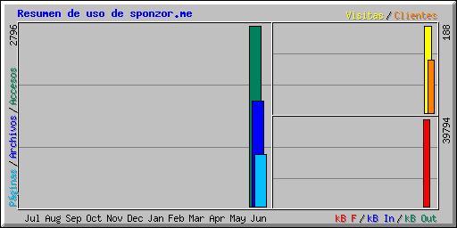

| Resumen por meses | ||||||||||||
|---|---|---|---|---|---|---|---|---|---|---|---|---|
| Mes | Media diaria | Totales mensuales | ||||||||||
| Accesos | Archivos | Páginas | Visitas | Clientes | kB F | kB In | kB Out | Visitas | Páginas | Archivos | Accesos | |
| Jun 2013 | 399 | 232 | 114 | 26 | 115 | 39794 | 0 | 0 | 188 | 799 | 1626 | 2796 |
| Totales | 39794 | 0 | 0 | 188 | 799 | 1626 | 2796 | |||||
| Generated by Webalizer Version 2.01 |